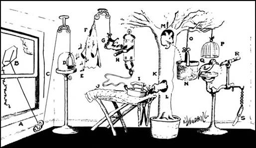

Assignment 1 - Probability
- Problem 1: 33 points total (3 points per subproblem)
- Problem 2: 15 points
- Problem 3: 15 points
- Problem 4: 7 points
- Problem 5: 15 points
- Problem 6: 15 points
Due: Monday, February 7, 12pm
This assignment is based on problems 1-5 of Jason Eisner’s language modeling homework plus a small programming problem (problem 6). Many thanks to Jason E. for making this and other materials for teaching NLP available!
- Answers to problems 1-5 should be hand-written or printed and handed in before class.
- Problem 6 asks you to write a small program in Scala, which you will submit through GitHub.
You are welcome to consult books that cover probability theory, such as DeGroot and Schervish or the appendices of Cormen et al, as well as the slides on probability from Dickinson, Eisner and Martin. Also, usage of Wikipedia in conjunction with the course readings, notes and assignments is acceptable (especially if you learn something from it). For this assignment, it may be helpful to consult the following: Algebra of sets (especially if you’re rusty on set theory) and Bayes’ theorem which is not extensively discussed in Jurafsy & Martin.
There are 100 points total in this assignment. Point values for each problem/sub-problem are given below.
Problem 1: 33 points total (3 points per subproblem)
These short problems will help you get the hang of manipulating probabilities. Let \( \mathcal{E} \neq \emptyset \) denote the event space (it’s just a set, also known as the sample space), and \( p \) be a function that assigns a real number in \( [0,1] \) to any subset of \( \mathcal{E} \). This number is called the probability of the subset.
You are told that \( p \) satisfies the following two axioms: \( p(\mathcal{E})=1 \). \( p(X \cup Y) = p(X) + p(Y) \) provided that \( X \cap Y = \emptyset \).
As a matter of notation, remember that the conditional probability \( p(X \mid Y) \stackrel{\tiny{\mbox{def}}}{=} \frac{p(X \cap Z)}{p(Z)} \). For example, singing in the rain is one of my favorite rainy-day activities: so my ratio \( p(\text{singing} \mid \text{rainy}) = \frac{p(\text{singing}~AND~\text{rainy})}{p(\text{rainy})} \) is high. Here the predicate “singing” picks out the set of singing events in \( \mathcal{E} \), “rainy” picks out the set of rainy events, and the conjoined predicate “singing AND rainy” picks out the interesction of these two sets—that is, all the vents that are both singing AND rainy.
-
Prove from the axioms that if
\( Y \subseteq Z \), then\( p(Y) \leq p(Z) \).You may use any and all set manipulations you like. Remember that
\( p(A) = 0 \)does not imply that\( A = \emptyset \)(why not?), and similarly, that\( p(B) = p(C) \)does not imply that\( B = C \)(even if\( B \subseteq C \)). -
Use the above fact to prove that conditional probabilities
\( p(X \mid Z) \), just like ordinary probabilities, always fall in the range\( [0,1]] \). -
Prove from the axioms that
\( p(\emptyset) = 0 \). -
Let
\( \bar{X} \)denote\( \mathcal{E} - X \). Prove from the axioms that\( p(X) = 1-p(\bar{X}) \). For example,\( p(\text{singing} = 1 - p(\text{NOT singing} \). -
Prove from the axioms that
\( p(\text{singing AND rainy} \mid \text{rainy} = p(\text{singing} \mid \text{rainy} \). -
Prove from the axioms that
\( p(X \mid Y) = 1 - p(\bar{X} \mid Y \). For example,\( p(\text{singing} \mid \text{rainy}) = 1 - p(\text{NOT singing} \mid \text{rainy}\). This is a generalization of (1.4). -
Simplify:
\( (p(X \mid Y) \cdot p(Y) + p(X \mid \bar{Y}) \cdot p(\bar{Y})) \cdot p(\bar{Z} \mid X) / p(\bar{Z}) \) -
Under what conditions is it true that
\( p(\text{singing OR rainy} = p(\text{singing}) + p(\text{rainy}) \)? -
Under what conditions is it true that
\( p(\text{singing AND rainy} = p(\text{singing}) \cdot p(\text{rainy}) \)? -
Suppose you know that
\( p(X \mid Y) = 0 \). Prove that\( p(X \mid Y,Z) = 0 \). -
Suppose you know that
\( p(W \mid Y) = 1 \). Prove that\( p(W \mid Y,Z) = 1 \).
Problem 2: 15 points
All cars are either red or blue. The witness claimed the car that hit the pedestrian was blue. Witnesses are bleieved to be about 80% reliable in reporting car color (regardless of the actual car color). But only 10% of all cars are blue.
-
(1 point) Write an equation relating the following quantities and perhaps other quantities.
\[ \begin{align} & p(true = \text{blue}) \\ & p(true = \text{blue} \mid claimed = \text{blue}) \\ & p(claimed = \text{blue} \mid true = \text{blue}) \end{align} \]Reminder: Here, claimed and true are random variables, which means that they are functions over some outcome space. For example, the probability that claimed = blue really means the probability of getting an outcome x such that claimed(x) = blue. We are implicitly assumping that the space of outcomes x is something like the set of witnessed car accidents.
-
(1 point) Match the three probabilites above with the following terms: prior probablity, likelihood of the evidence, posterior probability.
-
(4 points) Give the values of all three probabilities. (Hint: Use Bayes’ Theorem.) Which probability should the judge care about?
-
(4 points) Let’s suppose the numbers 80% and 10% are specific to Baltimore. So in the previous problem, you were implicitly using the following more general version of Bayes’ Theorem:
\[ p(A \mid B,Y) = \frac{ p(B \mid A,Y) \cdot p(A \mid Y) }{ p(B \mid Y) } \]where Y is city = Baltimore. Just as (1.6) generalized (1.4), by adding a “background” condition Y, this version generalizes Bayes’ Theorem. Carefully prove it.
-
(4 points) Now prove the more detailed version
\[ p(A \mid B,Y) = \frac{ p(B \mid A,Y) \cdot p(A \mid Y) }{ p(B \mid A,Y) \cdot p(A \mid Y) + p(B \mid \bar{A},Y) \cdot p(\bar{A} \mid Y) } \] -
(1 point) Write out the equation given in question (2.5) with A, B, and Y replaced by specific propositions from the red-and-blue car problem. For example, Y is ”city = Baltimore” (or just “Baltimore” for short). Now replace the probabilities with actual numbers from the problem, such as 0.8.
Yeah, it’s a mickeymouse problem, but I promise that writing out a real case of this important formula won’t kill you, and may even be good for you (like, on an exam).
Problem 3: 15 points
Beavers can make three cries, which they use to communicate. bwa and bwee usually mean something like “come” and “go” respectively, and are used during dam maintenance. kiki means “watch out!” The following conditional probability table shows the probability of the various cries in different situations.
| p( cry | situation ) | Preditor! | Timber! | I need help! |
| bwa | 0 | 0.1 | 0.8 |
| bwee | 0 | 0.6 | 0.1 |
| kiki | 1.0 | 0.3 | 0.1 |
-
(1 point) Notice that each column of the above table sums to 1. Write an equation stating this, in the form
\( \sum_{variable} p(\cdots) = 1 \) -
(4 point) A certain colony of beavers has already cut down all the trees around their dam. As there are no more to chew, p(timber) = 0. Getting rid of the trees has also reduced p(predator) to 0.2. These facts are shown in the following joint probability table. Fill in the rest of the table, using the previous table and the laws of probability. (Note that the meaning of each table is given in its top left cell.)
p( cry | situation ) Preditor! Timber! I need help! TOTAL bwa bwee kiki TOTAL 0.2 0 -
(10 point, 2 pts per subproblem) A beaver in this colony cries
kiki. Given this cry, other beavers try to figure out the probability that there is a predatori. This probability is written as: p(_________)
ii. It can be rewritten without the | symbol as: _________
iii. Using the above tables, its value is: _________
iv. Alternatively, Bayes’ Theorem allows you to express this probability as:\[ \frac{ p(\_\_\_\_) \cdot p(\_\_\_\_) }{ p(\_\_\_\_) \cdot p(\_\_\_\_) + p(\_\_\_\_) \cdot p(\_\_\_\_) + p(\_\_\_\_) \cdot p(\_\_\_\_) } \]
v. Using the above tables, the value of this is:
\[ \frac{ p(\_\_\_\_) \cdot p(\_\_\_\_) }{ p(\_\_\_\_) \cdot p(\_\_\_\_) + p(\_\_\_\_) \cdot p(\_\_\_\_) + p(\_\_\_\_) \cdot p(\_\_\_\_) } \]
This should give the same result as in part iii., and it should be clear that they are really the same computation—by constructing table (b) and doing part iii., you were implicitly using Bayes’ Theorem. (I told you it was a trivial theorem!)
Problem 4: 7 points

Rube Goldberg gets his think-tank working and evolves the simplified pencil-sharpener. Open window (A) and y kite (B). String (C) lifts small door (D) allowing moths (E) to escape and eat red flannel shirt (F). As weight of shirt becomes less, shoe (G) steps on switch (H) which heats electric iron (I) and burns hole in pants (J). Smoke (K) enters hole in tree (L), smoking out opossum (M) which jumps into basket (N), pulling rope (O) and lifting cage (P), allowing woodpecker (Q) to chew wood from pencil (R), exposing lead. Emergency knife (S) is always handy in case opossum or the woodpecker gets sick and can’t work.
1. \( p(\neg \text{shoe} \mid \neg \text{nail}) = 1 \) For want of a nail the shoe was lost,
2. \( p(\neg \text{horse} \mid \neg \text{shoe}) = 1 \) For want of a shoe the horse was lost,
3. \( p(\neg \text{race} \mid \neg \text{horse}) = 1 \) For want of a horse the race was lost,
4. \( p(\neg \text{fortune} \mid \neg \text{race}) = 1 \) For want of a race the fortune was lost,
5. \( p(\neg \text{fortune} \mid \neg \text{nail}) = 1 \) And all for the want of a horseshoe nail.
Show carefully that (e) follows from (a)–(d). Hint: Consider \[
p(\neg \text{fortune}, \neg \text{race}, \neg \text{horse}, \neg \text{shoe} \mid \neg \text{nail}),
\] as well as the “chain rule” and problems (1.1), (1.2), and (1.11).
Note: The \( \neg \) symbol denotes the boolean operator NOT.
Note: This problem is supposed to convince you that logic is just a special case of probability theory.
Note: Be glad I didn’t ask you to prove the correct operation of the pencil sharpener!
Problem 5: 15 points
A language model is a probability function p that assigns probabilities to word sequences such as \( \vec{w} = \) (i, love, new york). Think of \( p(\vec{w}) \) as the probability that if you turned on a radio at an arbitrary moment, its next four words would be “i love new york”—perhaps in the middle of a longer sentence such as “the latest bumper sticker says, i love new york more than ever.” We often want to consider \( p(\vec{w}) \) to decide whether we like \( p(\vec{w}) \) better than an alternative sequence.
Formally, each element \( W \in \mathcal{E} \) of the underlying event space is a possible value of the infinite sequence of words that will come out of the radio after you turn it on. \( p(\vec{w}) \) is really an abbreviation for \( p(\text{prefix}(W,|\vec{w}|) = \vec{w} \), where \( |\vec{w}|) \) denotes the length of the sequence \( p(\vec{w}) \). Thus, p(i,love,new,york) is the total probability of all infinite word sequences W that begin “i love new york ….”
Suppose \( p(\vec{w}) = w_1 w_2 \dots w_n \) (a sequence of n words). A trigram language model defines \[
p(\vec{w}) \stackrel{\tiny{\mbox{def}}}{=} p(w_1) \cdot
p(w_2 \mid w_1) \cdot
p(w_3 \mid w_1, w_2) \cdot
p(w_4 \mid w_2, w_3) \cdots
p(w_n \mid w_{n-2}, w_{n-1})
\] on the assumption that the sequence was generated in the order \( w_1, w_2, w_3, \dots \) (“from left to right”) with each word chosen in a way dependent on the previous two words. (But the first word \( w_1 \) is not dependent on anything, since we turned on the radio at a arbitrary moment.)
-
(4 points) Expand the above definition of
\( p(\vec{w}) \)using naive estimates of the parameters, such as\[ \begin{align} p(w_4 \mid w_2, w_3) \stackrel{\tiny{\mbox{def}}}{=} & \frac{c(w_2 w_3 w_4)}{c(w_2 w_3)} \end{align} \]where\( c(w_2 w_3 w_4) \)denotes the count of times the trigram\( w_2 w_3 w_4 \)was observed in a training corpus.Remark: Naive parameter estimates of this sort are called “maximum-likelihood estimates” (MLE). They have the advantage that they maximize the probability (equivalently, minimize the perplexity) of the training data. But they will generally perform badly on test data, unless the training data were so abundant as to include all possible trigrams many times. This is why we must smooth these estimates in practice.
-
(5 points) One could also define a kind of reversed trigram language model
\( p_{reversed} \)that instead assumed the words were generated in reverse order (“from right to left”):\[ \begin{align} p_{reversed}(\vec{w}) \stackrel{\tiny{\mbox{def}}}{=}&p(w_n) \cdot p(w_{n-1} | w_n) \cdot p(w_{n-2} | w_{n-1} w_n) \cdot p(w_{n-3} | w_{n-2} w_{n-1}) \\ &\cdots p(w_2 | w_3 w_4) \cdot p(w_1 | w_2 w_3) \end{align} \]By manipulating the notation, show that the two models are identical (i.e.,\( p(\vec{w}) = p_{reversed}(\vec{w}) \)for any\( \vec{w} \)provided that both models use MLE parameters estimated from the same training data (see problem (5.1))). -
(3 points) In the data you will use in questions 6 and 14, sentences are delimited by
<s>at the start and</s>at the end. For example, the following data set consists of a sequence of 3 sentences:<s> do you think so </s> <s> yes </s> <s> at least i thought so </s>Given English training data, the probability of
<s> do you think the </s>should be extremely low under any good language model. Why? In the case of the trigram model, which parameter or parameters are responsible for making this probability low?
-
(3 points)
You turn on the radio as it is broadcasting an interview. Assuming a trigram model, match up expressions (A), (B), (C) with descriptions (1), (2), (3):
The expression
(A)
\( p(\text{Do}) \cdot p(\text{you} \mid \text{Do}) \cdot p(\text{think} \mid \text{Do}, \text{you}) \)
(B)\( p(\text{Do} \mid \text{<s>}) \cdot p(\text{you} \mid \text{<s>}, \text{Do}) \cdot p(\text{think} \mid \text{Do}, \text{you}) \cdot p(\text{</s>} \mid \text{you}, \text{think}) \)
(C)\( p(\text{Do} \mid \text{<s>}) \cdot p(\text{you} \mid \text{<s>}, \text{Do}) \cdot p(\text{think} \mid \text{Do}, \text{you}) \)represents the probability that
(1) the first complete sentence you hear is
Do you think(as in, ”D’ya think?”)
(2) the first 3 words you hear areDo you think
(3) the first complete sentence you hear starts withDo you thinkExplain your answers briefly. Which quantity is
\( p(\vec{w}) \)?Remark: The distinctions matter because “Do” is more probable at the start of an English sentence than in the middle, and because (3) describes a larger event set than (1) does.
Problem 6: 15 points
This problem is very small programming exercise intended to give you a small amount of practice counting things in text and to make sure you are comfortable running a program on the Unix command line.
First, download the text of Jane Austen’s book Persuasion from Project Gutenberg. Then, use the tr command as follows in order to create word-per-line version containing only alphabetic characters:
$ cat 105.txt | tr -cs '[:alpha:]' '\n' > 105_wpl.txtNow, write a Java or Python program that reads in 105_wpl.txt and counts bigrams and unigrams in an associative array (dictionary/hashmap) and prints out the conditional probabilities:
- p(the | of)
- p(the | and)
Call your program compute_bigram.scala. It should take the file 105_wpl.txt as its first command-line argument, and produce the following output
$ python compute_bigram.py 105_wpl.txt
p(the|of) = 0.16878742515
p(the|and) = 0.0399002493766We will of course test these values on another text, so you should make sure to actually compute the values and not just print them out…
Here’s a stub Python script which deals with the command line args to get you going:
#!/usr/bin/python
import sys
## Take file from stdin or as first arg on command line depending on
## how count_words.py is called.
in_file = sys.stdin
if len(sys.argv) > 1:
in_file = file(sys.argv[1])
unigram_counts = {}
bigram_counts = {}
# Do your counting in a loop here.
print "p(the|of) =", # use the counts to compute the conditional probability
print "p(the|and) =", # use the counts to compute the conditional probability Submit your file compute_bigram.scala on Blackboard in the submission area for HW1. Remember that your solutions for Problems 1-5 must be handed in as hard copy in class.